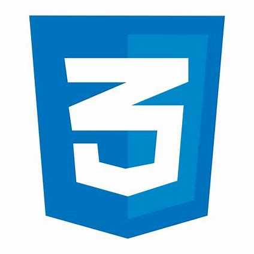

Projet veliko
Projet veliko
Veliko est une application qui permet de suivre en temps réel la disponibilité des vélos dans les stations de partage. Son objectif est de faciliter l'accès aux vélos en informant les utilisateurs de la localisation et de la disponibilité des stations, contribuant ainsi à encourager une mobilité plus durable en milieu urbain. Ce rapport présentera les outils utilisés, les différentes versions du projet, les difficultés rencontrées ainsi que la conclusion de cette réalisation.
Moyens utilisés :
Le projet a été réalisé en utilisant :
Langages :


ORM :
L'API de Vélib' et Street View Map ont également été utilisées pour afficher la carte et suivre les vélos en temps réel.